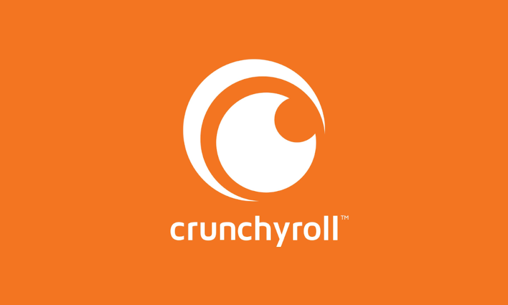
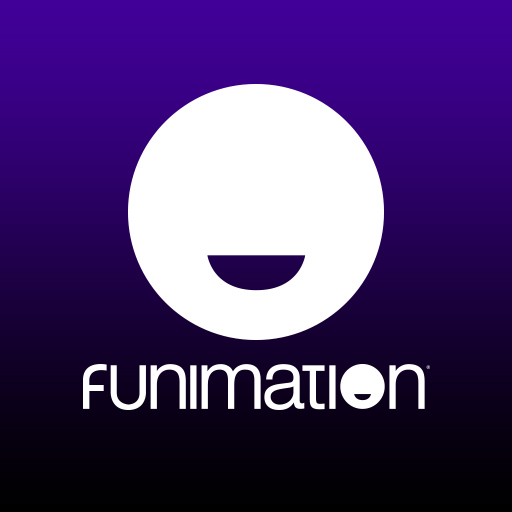
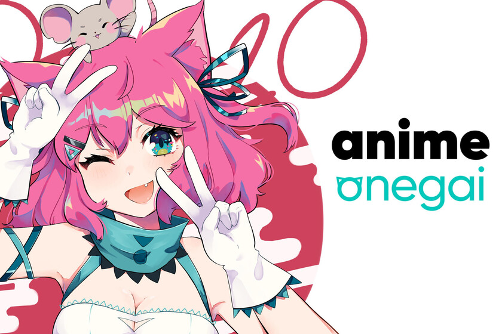

| IMAGEN | NOMBRE | INFORMACION |
|---|---|---|
|  | Crunchyroll | Crunchyroll, LLC es una empresa estadounidense de distribución, publicación, producción y concesión de licencias centrada en la transmisión de anime, manga y dorama. | >
|  | Funimation | Funimation Global Group, LLC es una compañía estadounidense de entretenimiento que se especializa en el doblaje y distribución de contenido extranjero, especialmente el anime. |
|  | Anime Onegai | Anime Onegai se anunció desde febrero de 2020 como una nueva plataforma de anime que sería exclusiva para América Latina, en octubre de ese año arrancó su fase beta con contenido limitado, pero con la promesa de trabajar con nuevas productoras y la creación de doblajes. |